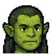
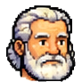
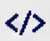
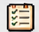
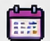

Um escritório de agentes de IA, com cara de Windows 95
O TeamAgent Orquestrador põe Claude Code, Codex CLI, OpenCode e Gemini CLI para trabalhar como um time. Você monta o organograma, distribui as tarefas, e cada agente trabalha pelo próprio cliente de linha de comando. Uma tarefa feita por um agente é sempre revisada por outro, de outro cliente, e só então entra no código.
Tudo é point-and-click, como nos jogos de escritório dos anos 90: clique num computador para falar com o agente, responda as perguntas dele na mesa e acompanhe a saída ao vivo.
> quebrando o objetivo em 4 tarefas…

> editando src/stream.go

> APROVADO
Organograma de agentes
Cada agente tem nome, função, rostinho, emblema, cliente (Claude, Codex, OpenCode, Gemini), modelo ou nível (júnior, médio, sênior) e um superior. O prompt de cada um já diz a quem ele responde e quem são os subordinados.

Cada um pelo próprio CLIO orquestrador não chama APIs: ele abre o cliente oficial de cada agente em modo não interativo, lê a saída JSON linha a linha e mostra tudo na tela: texto, ferramentas usadas, tokens e erros.

Revisão cruzadaToda tarefa passa por revisão de um agente de outro cliente. Se o Codex fez, o Claude revisa, por exemplo.
O revisor responde APROVADO ou MUDANÇAS: ….

Sprints e tarefasSprints com objetivo, progresso e retrospectiva. As tarefas são criadas à mão ou geradas por um agente a partir de um objetivo; as geradas chegam como propostas, que você aprova.
Uma branch por tarefa
Em projetos git, cada tarefa ganha sua branch num worktree separado. O agente nunca mexe na sua pasta. No fim: commit, push, PR no GitHub e merge com um clique.
Cotas sob controle
Quando um modelo fica sem cota, o orquestrador anota quando ele volta e, com a troca automática ligada, passa a tarefa para outro modelo ou para o agente reserva.
O app é um programa nativo (Go + Wails v3) com a interface em HTML. Quando um agente precisa trabalhar, o orquestrador monta o comando do cliente dele, roda o processo na pasta certa e traduz cada linha de JSON para a tela.
O que vem da saída de cada cliente
- Texto do agente, linha a linha, no Console e no computador dele.
- Ferramentas usadas (comandos, edições de arquivo).
- Tokens de entrada, saída e cache, somados na aba Tokens.
- Erros, classificados para dizer o que fazer.
Proteções de cada sessão
- Para se o agente fica 5 minutos em silêncio.
- Para depois de 45 minutos (agente em laço).
- No Windows, o processo inteiro (com os filhos) é encerrado, sem janelas de console piscando.
- Log bruto de cada sessão em
.tao/logs/.
Clique nas abas para ver cada tela do app. As imagens usam os dados de demonstração da interface.
Clique em cada etapa. Em projetos que não são repositórios git, as etapas de commit, PR e merge são puladas: a tarefa termina na aprovação.
Quando algo sai do caminho
Se a última linha dele é uma pergunta, a tarefa fica bloqueada e aparece na Mesa. Você responde e ela volta para o mesmo agente, com a pergunta e a resposta no prompt.
A tarefa volta para "fazendo" no mesmo worktree, com o parecer no histórico. O agente corrige e ela volta para revisão.
Da Mesa você passa a tarefa para outro agente (com uma observação) ou arquiva. Uma tarefa concluída pode ser reaberta com um motivo.
Planos gratuitos e assinaturas acabam. Quando um cliente diz "sem cota", o orquestrador lê quando ela volta (ou estima) e cria um relógio. A barra de status mostra quantos modelos estão em espera, e Ferramentas → Modelos e cotas mostra a contagem regressiva de cada um.
Falhas que o orquestrador reconhece
| Tipo | Exemplo | O que acontece |
|---|---|---|
| cota | "usage limit reached, try again at 15:40" | Relógio até a volta; troca automática, se ligada. |
| modelo | modelo inexistente ou aposentado | Fica fora por 1 dia; a troca escolhe outro. |
| transitório | "overloaded", "at capacity", 502/503 | Avisa que é temporário; uma espera longa informada vira relógio. |
| autenticação | login expirado, pasta não confiável | Pede para entrar de novo no cliente ou marcar a pasta como confiável. |
| contexto | conversa grande demais | Sugere uma instrução menor ou dividir a tarefa. |
| recusa | o modelo se negou | Sugere reescrever com mais contexto ou trocar de modelo. |
| lançamento | cliente não instalado | Pede para instalar o cliente ou conferir o PATH (aba Clientes). |
| tempo | 5 min em silêncio ou 45 min no total | Encerra o processo e libera o agente. |
O TeamAgent nasceu do orq em Python do jogo JinChronicles, que organiza o time em
docs/equipe/owners.json (papéis, ferramentas, modelos) e as tarefas em cartões docs/tasks/T###.md.
Abra a pasta de um projeto assim e use Arquivo → Importar cartões (owners.json):
- Cada papel vira um agente, com cliente, nível (barato → júnior, médio, forte → sênior), emblema e as leituras obrigatórias nas instruções.
- O produtor fica no topo do organograma, e os demais respondem a ele.
- Cada cartão vira uma tarefa, com status, critério de pronto, revisor, pergunta pendente, pareceres e branch.
- As sprints citadas viram sprints (a mais recente com trabalho aberto fica ativa).
- Uma branch que só existe no GitHub é retomada de lá, sem perder commits.
A importação é de mão única: os cartões originais não são alterados.
- Requisitos: Go 1.26+, Node 20+ e o CLI do Wails v3.
go install github.com/wailsapp/wails/v3/cmd/wails3@v3.0.0
- Pelo menos um cliente de agente, já com login feito:
npm i -g @anthropic-ai/claude-code @openai/codex @opencode/cli @google/gemini-cli
- Rodar ou gerar o executável:
git clone https://github.com/exadmax/TeamAgentOrchestrator cd TeamAgentOrchestrator wails3 dev # janela com recarga automática wails3 build # gera bin/TeamAgent.exe go test ./... # testes do backend
- Abrir um projeto: Arquivo → Abrir projeto. Se a pasta não tiver
tao.json, ela ganha um time inicial (Orquestrador e Arquiteto no Claude, Engenheiro no Codex, Revisor no OpenCode), que você muda no Organograma.
Onde ficam os dados
| Arquivo | O que guarda | Vai para o git? |
|---|---|---|
tao.json | o time (agentes, clientes, modelos, reservas) e o fluxo git | sim |
tao.tasks.json | sprints e tarefas, com histórico | sim |
.tao/ | sessões, logs, relógios de cota, trocas de modelo, etapas e worktrees | não (ignorado sozinho) |
Núcleo em Go, janela Win95, organograma, Console com saída ao vivo, Tokens, Clientes.
Sprints e tarefas, geração por agente, revisão em outro cliente, Mesa do Agente.
Branch e PR por tarefa, merge, troca de modelo, agente reserva, importador de cartões, Wails v3.
Instalar e atualizar os clientes pela aba Clientes, instalador, builds para Linux e macOS.
Construído a várias mãos: o próprio Claude Code coordenou, e partes do código foram escritas pelo Codex e pelo OpenCode, o mesmo tipo de time que o orquestrador organiza.